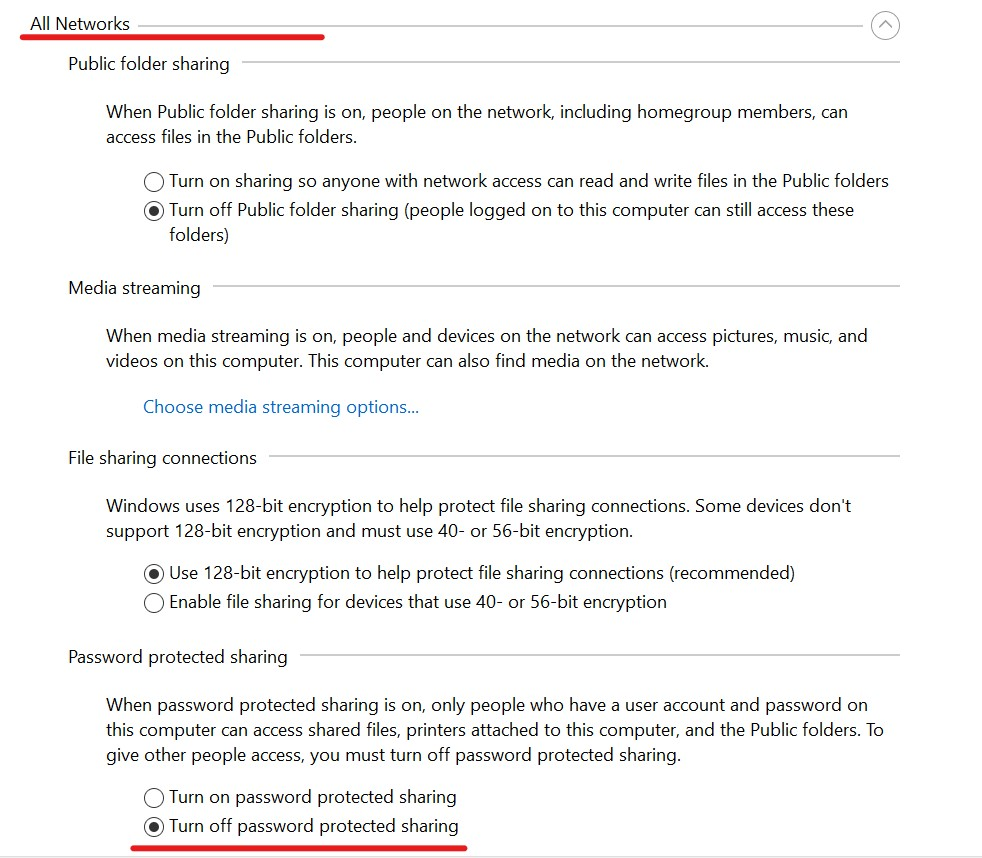
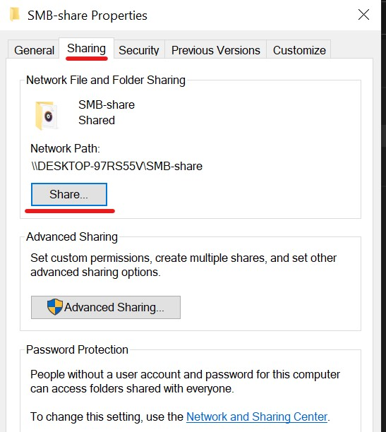
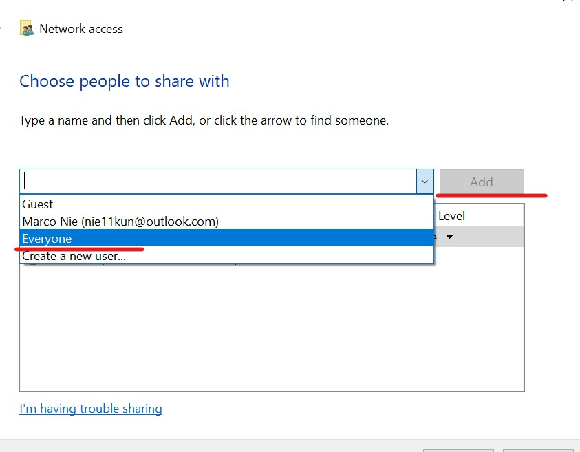
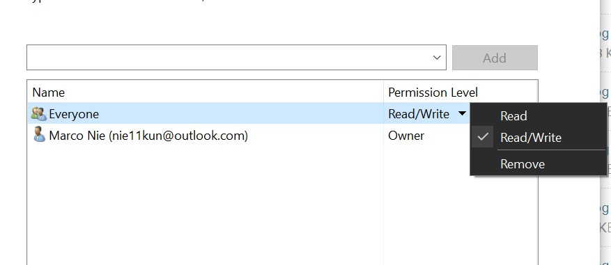
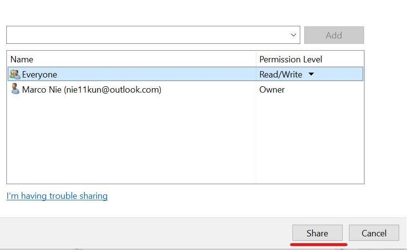
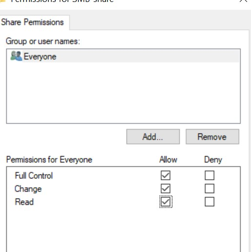
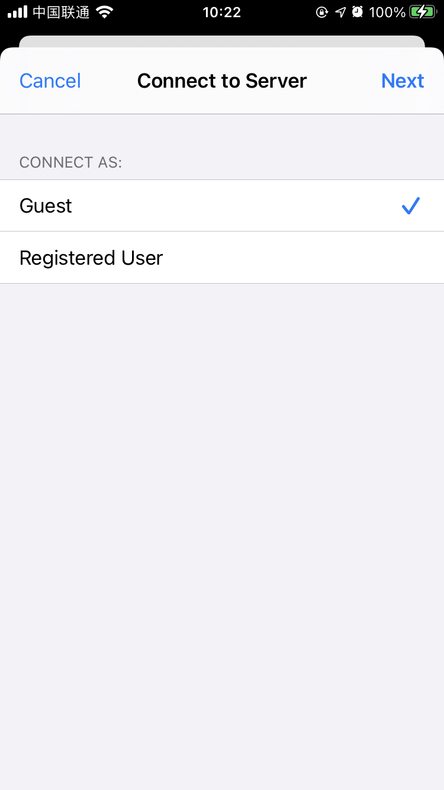

这篇文章上次修改于 297 天前，可能其部分内容已经发生变化，如有疑问可询问作者。
最近研究了下 Windows 的共享设置，目的是在同一局域网下共享文件夹给其他设备读写。下面从原理和实际操作上介绍下共享过程。
SMB
Windows 共享使用 Server Message Block (SMB) 协议，它可以让应用程序访问本机网络下的其他设备的文件及服务。
SMB 是 IBM 在 1980 年代创造的协议，目前已经有了很多的升级及分支。
SMB 协议允许应用程序访问远程主机的文件和资源如打印机等，也可以同远程主机上设置了接收 SMB 协议的应用程序通信。它运行在网络的 layer 7 层，也就是 application 应用层，使用 TCP/IP 的 445 端口传输数据。
从 Windows 95 开始，微软将引入了 SMB 协议的支持。Linux 端，samba 作为一个开源软件提供 SMB 的支持。
SMB 协议也是在不断发展的，下面是一个简单的版本更新过程：
- SMB 1.0 (1984): IBM 为 DOS 下的文件共享创造了 SMB
- CIFS (1996): 微软开发了 SMB 的分支版本并集成在 Windows 95，添加了大文件的支持，直接在 TCP/IP 传输
- SMB 2.0 (2006): 在 Windows Vista 和 Windows Server 2008 中发布. 提升了性能
- SMB 2.1 (2010): 在 Windows Server 2008 R2 和 Windows 7 中发布
- SMB 3.0 (2012): 在 Windows 8 和 Windows Server 2012 中发布. 提升了性能，增加备份，安全和管理功能
- SMB 3.02 (2014): 在 Windows 8.1 和 Windows Server 2012 R2 中发布. 提升性能并完全停止支持 CIFS/SMB 1.0
- SMB 3.1.1 (2015): 在 Windows 10 和 Windows Server 2016 中发布
在 2017 年，利用 SMB 1.0 的漏洞，WannaCry 勒索软件在互联网中大规模传播，微软虽然立刻发布了补丁，但专家还是建议立刻停止运行 SMB 1.0 协议。
Windows 设置共享
下面介绍在 Windows 10 中配置共享文件夹。
首先打开控制面板，进入 network and Internet：
点击 network and sharing center：
点击 change advanced sharing settings：
在 current profile 中打开网络发现和文件共享：
然后在 all network 中关闭密码保护(否则在其他设备访问时会提示输入账户密码)：

控制面板配置完成后，我们开始配置需要共享的文件夹。
在需要共享的文件夹上点击右键，选择属性：
在 share 选项卡中点击 share：

在下拉菜单中选择 everyone，然后点击 add：

修改此文件夹的读写权限，我这里设置读和写：

点击 share 开启共享：

返回属性栏，点击 advanced share：
选中 share this folder：
点击 permission：
设置共享权限，我这里设置为可读写：

确认后共享文件夹就配置完成了。
访问共享文件
下面介绍在其他局域网设备访问主机的共享文件夹。
Windows
在 Windows 上，打开 file explorer，点击 network：
在右侧就是本地网络下启用了网络发现的设备列表，点击进入设置了共享文件夹的设备名称就可以访问了：
也可以在地址栏直接输入共享路径地址，以双反斜线\\开头后面是设备 IP 或名称，如：\\DESKTOP-BS3C55D。
关于设备的名称，可以在终端通过 whoami 命令查询：
iPhone
在支持 SMB 协议的设备或应用程序中都可以打开 Windows 共享的文件，下面介绍通过 iPhone 的 files app 来连接到 Windows 共享目录。
打开 files app，点击右上角的 ... 选择 connect to server：
在 server 中输入共享主机的地址，这里直接输入 IP 地址：
选择 guest 点击 next：

完成后就可以访问到共享目录了：
如果文件夹设置的是可读写权限，就可以在手机上传输文件到共享目录了。
没有评论